Biznes Fusion - auta z Danii - pewność i jakość!
Prezentujemy Mazdę 6 2.5 Skyactiv-G Sports-Line – dynamiczny, komfortowy liftback z 2015 roku, importowany z Danii, z bardzo bogatym wyposażeniem!
Silnik: 2.5 benzyna, 192 KM
Skrzynia biegów: automatyczna
Nadwozie: 5-drzwiowy liftback
Ilość miejsc: 5
Przebieg: 175 025 km
Data pierwszej rejestracji: 24.07.2015
Wyposażenie:
✅ automatyczna, dwustrefowa klimatyzacja
✅ tempomat
✅ wielofunkcyjna, skórzana kierownica z łopatkami
✅ elektrycznie składane i podgrzewane lusterka
✅ czujnik deszczu
✅ automatyczne światła, adaptacyjne reflektory bi-xenon
✅ światła LED do jazdy dziennej i tylne LED
✅ czujniki parkowania przód i tył, kamera cofania
✅ systemy bezpieczeństwa: ABS, ESP, kontrola trakcji, poduszki powietrzne przód/bok/kurtyny
✅ system mocowania fotelików dziecięcych ISOFIX
✅ komputer pokładowy
✅ centralny zamek
✅ radio, Bluetooth, USB, system nagłośnienia
✅ przyciemniane szyby tylne
✅ podłokietniki przód i tył
✅ podgrzewane fotele kierowcy i pasażera
✅ podgrzewanie siedzenie tylnie
✅ system Start/Stop
✅ nawigacja, dotykowy ekran
✅ 19-calowe alufelgi
✅ wspomaganie kierownicy
✅ rozdział siły hamowania
✅ asystent pasa ruchu, asystent świateł drogowych
✅ keyless go i uruchamianie silnika przyciskiem
✅ hak holowniczy
itd.
Podstawowe informację związane z serwisem:
* Auto serwisowane częściowo w ASO Mazda oraz Multibrendzie Suzuki
* Ostatnia wizyta serwisowa: 23.04.2026r przy przebiegu 173170 km
- wymiana oleju w silniku oraz filtra kabinowego
- wymiana oleju w skrzyni biegów
- wymiana tarcz oraz klocków hamulcowych przód oraz tył
Bezwypadkowy: Historia pojazdu bez kolizji, potwierdzona dokumentacją urzędową.
Udokumentowany przebieg: Przebieg potwierdzony notami z przeglądów technicznych.
Linki do weryfikacji (oficjalne źródła duńskie):
Raport eSyn (przebieg, historia):
https://findsynsrapport.esyn.dk/result?chassisNumber=JMZGJ693871318354
https://www.nummerplade.net/stelnummer/JMZGJ693871318354.html
Rejestr pojazdów SKAT:
https://motorregister.skat.dk/dmr-kerne/koeretoejdetaljer/visKoeretoej?execution=e5s2
Istnieje możliwość zakupu auta w kredycie !!!!!!
* W celu zapoznania się z całą naszą ofertą, zapraszamy na FB - Biznes Fusion auta z Danii lub pod numerem telefonu:
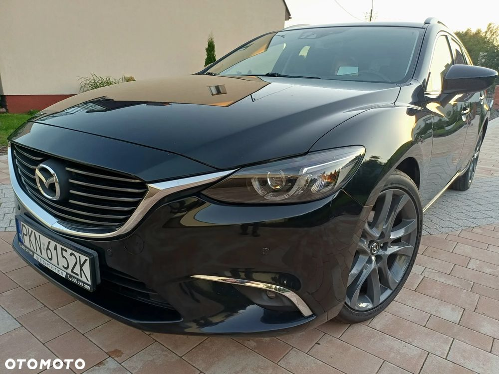


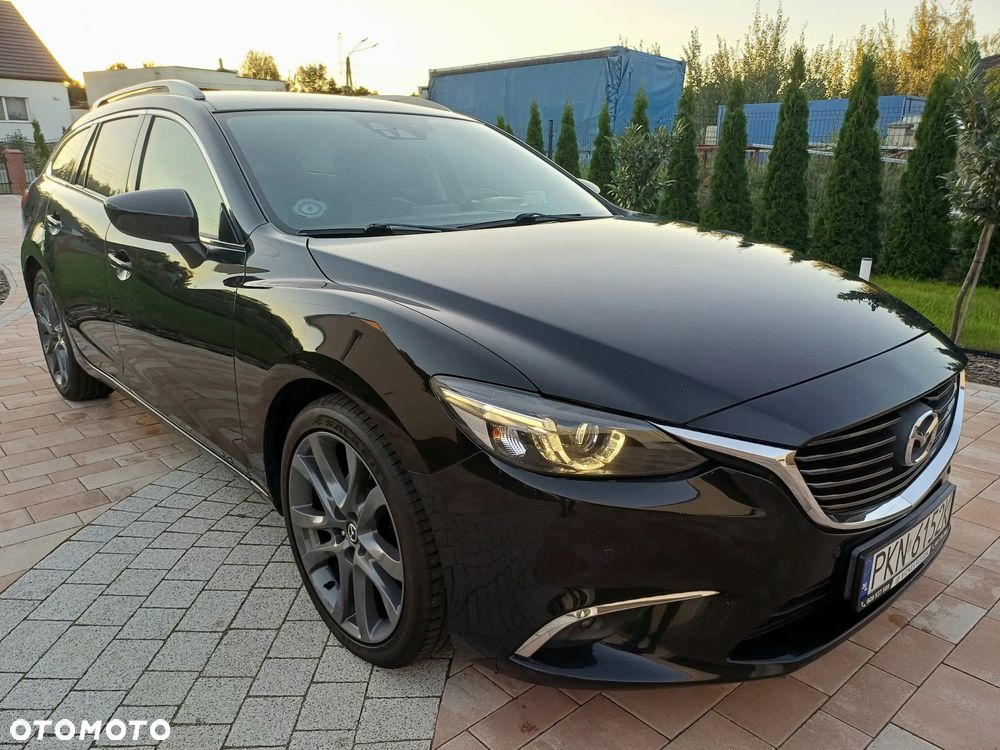

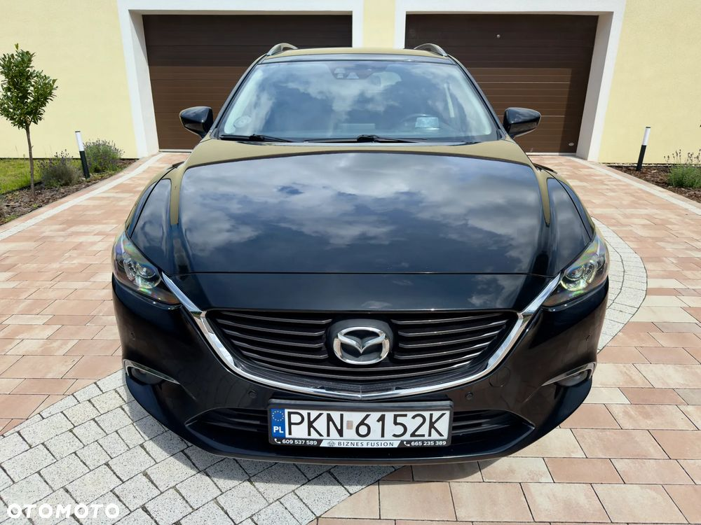
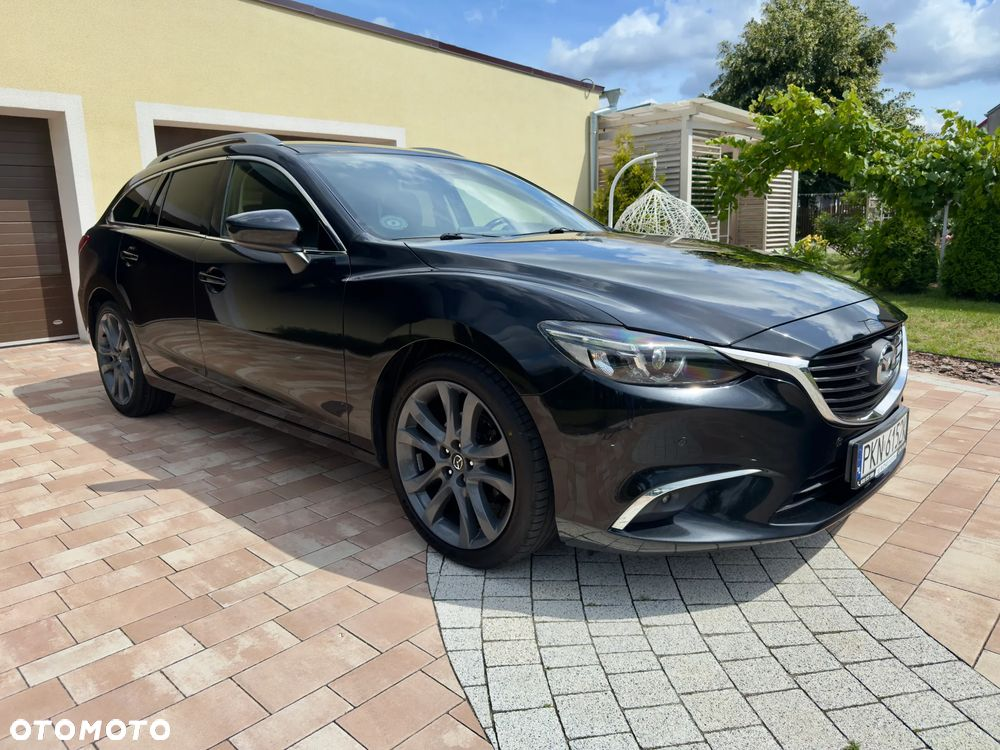

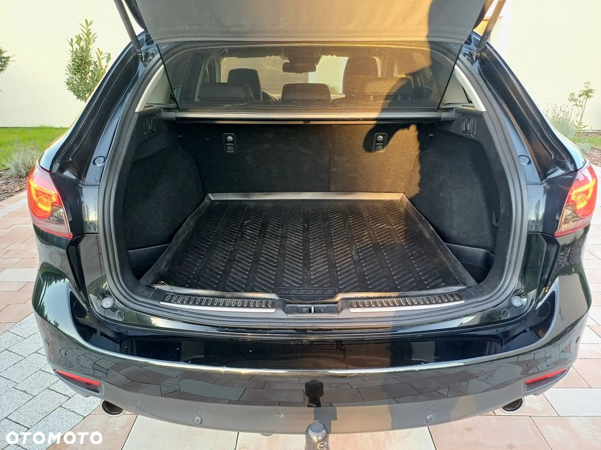
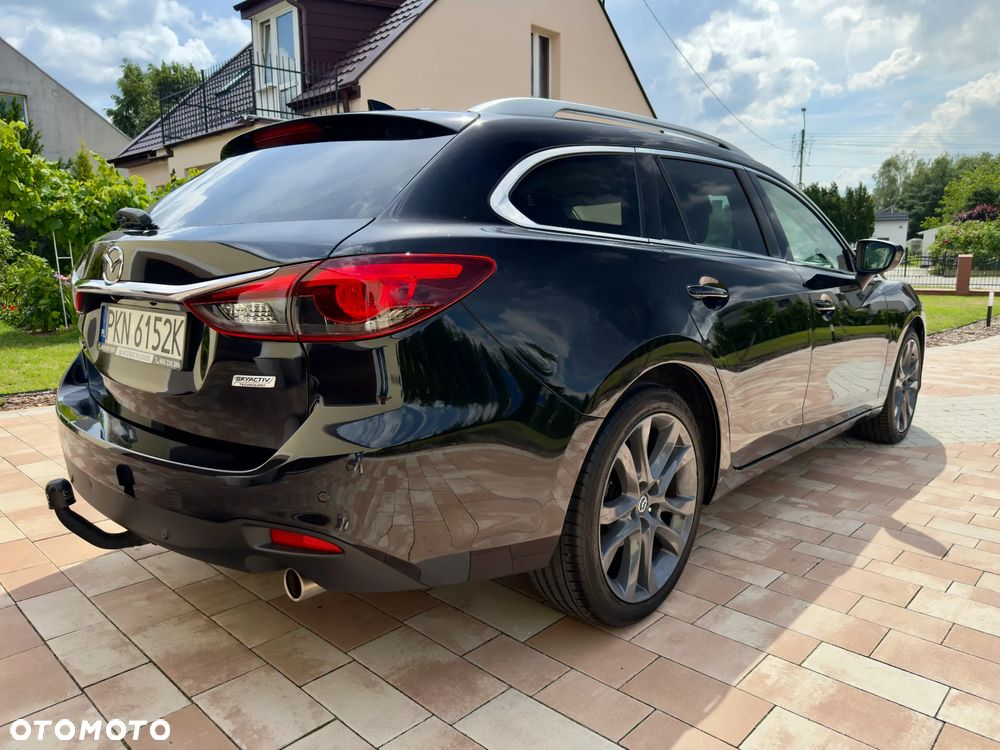
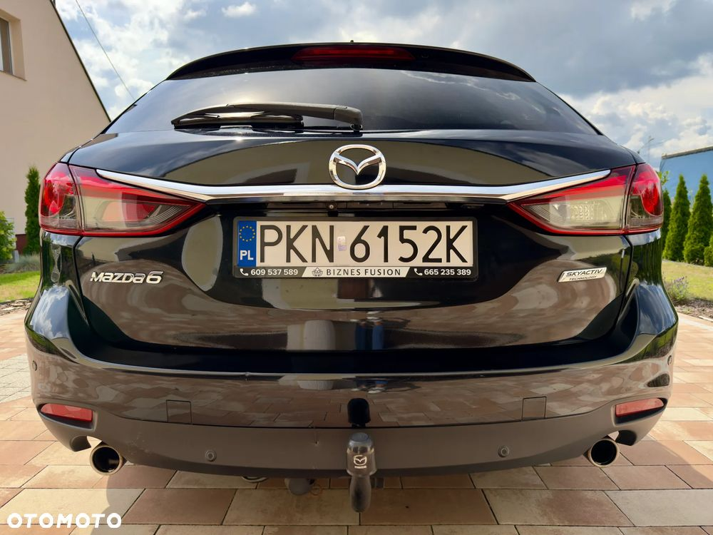
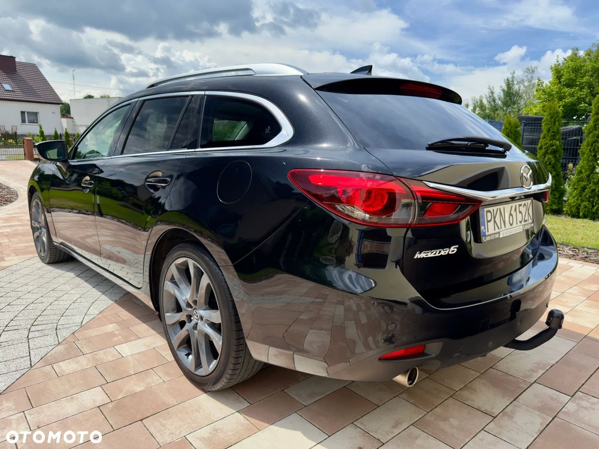
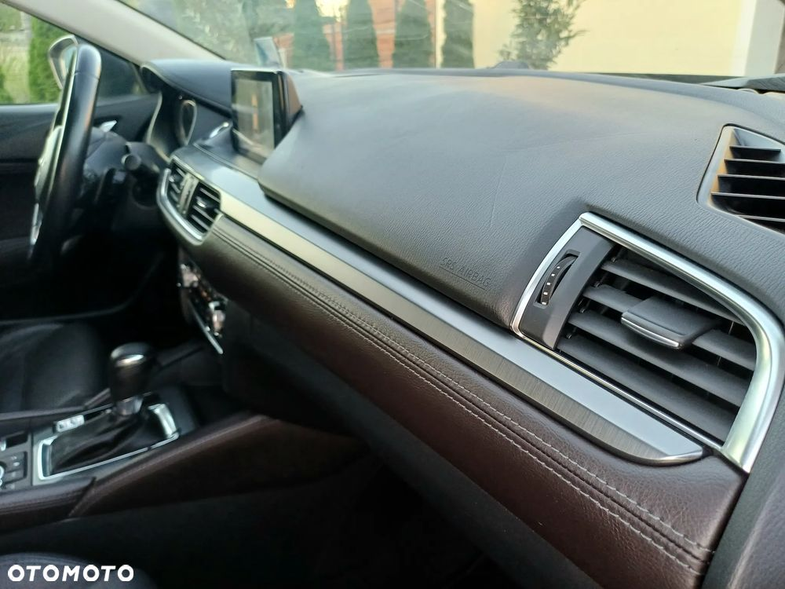
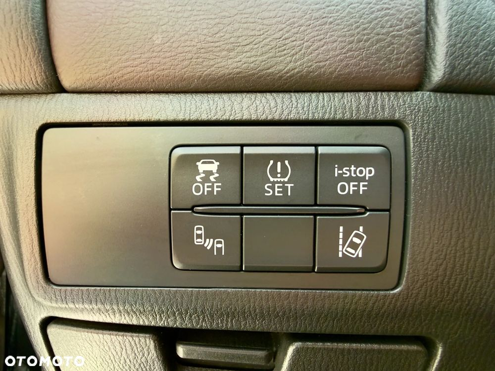
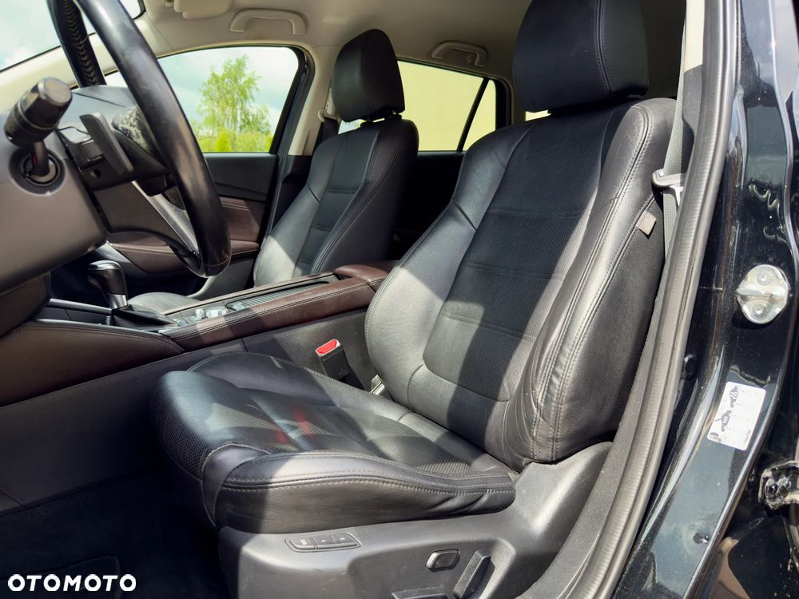
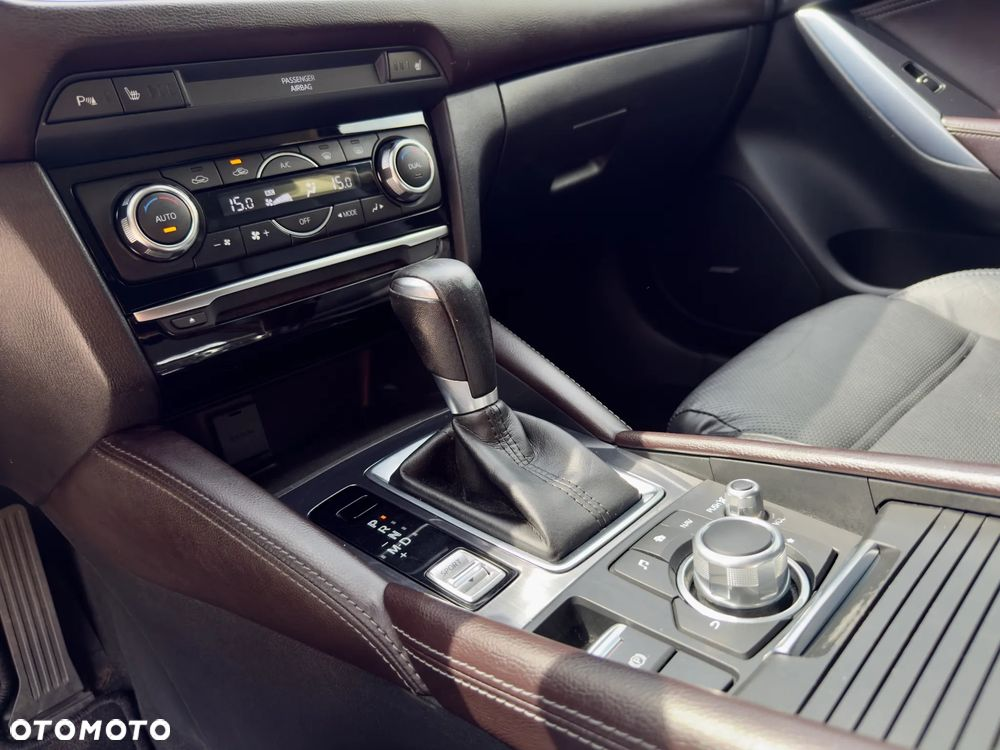